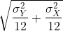

Central Limit Theorem in practice
Last updated on 2025-08-15 | Edit this page
Estimated time: 0 minutes
Overview
Questions
- How is the CLT used in practice?
Objectives
Central Limit Theorem in Practice
Let’s use our data to see how well the central limit theorem approximates sample averages from our data. We will leverage our entire population dataset to compare the results we obtain by actually sampling from the distribution to what the CLT predicts.
R
# pheno <- read.csv("mice_pheno.csv") #file was previously downloaded
head(pheno)
OUTPUT
Sex Diet Bodyweight
1 F hf 31.94
2 F hf 32.48
3 F hf 22.82
4 F hf 19.92
5 F hf 32.22
6 F hf 27.50Start by selecting only female mice since males and females have different weights. We will select three mice from each population.
R
library(dplyr)
controlPopulation <- filter(pheno, Sex == "F" & Diet == "chow") %>%
select(Bodyweight) %>% unlist
hfPopulation <- filter(pheno, Sex == "F" & Diet == "hf") %>%
select(Bodyweight) %>% unlist
We can compute the population parameters of interest using the mean function.
R
mu_hf <- mean(hfPopulation)
mu_control <- mean(controlPopulation)
print(mu_hf - mu_control)
OUTPUT
[1] 2.375517We can compute the population standard deviations of, say, a vector
x as well. However, we do not use the R function sd
because this function actually does not compute the population standard
deviation σx. Instead, sd assumes the
main argument is a random sample, say X, and provides an estimate
of σx, defined by sX above. As shown
in the equations above the actual final answer differs because one
divides by the sample size and the other by the sample size minus one.
We can see that with R code:
R
x <- controlPopulation
N <- length(x)
populationvar <- mean((x-mean(x))^2)
identical(var(x), populationvar)
OUTPUT
[1] FALSER
identical(var(x)*(N-1)/N, populationvar)
OUTPUT
[1] TRUESo to be mathematically correct, we do not use sd or
var. Instead, we use the popvar and
popsd function in rafalib:
R
library(rafalib)
sd_hf <- popsd(hfPopulation)
sd_control <- popsd(controlPopulation)
Remember that in practice we do not get to compute these population parameters. These are values we never see. In general, we want to estimate them from samples.
R
N <- 12
hf <- sample(hfPopulation, 12)
control <- sample(controlPopulation, 12)
As we described, the CLT tells us that for large N, each of these is approximately normal with average population mean and standard error population variance divided by N. We mentioned that a rule of thumb is that N should be 30 or more. However, that is just a rule of thumb since the preciseness of the approximation depends on the population distribution. Here we can actually check the approximation and we do that for various values of N.
Now we use sapply and replicate instead of
for loops, which makes for cleaner code (we do not have to
pre-allocate a vector, R takes care of this for us):
R
Ns <- c(3,12,25,50)
B <- 10000 #number of simulations
res <- sapply(Ns,function(n) {
replicate(B,mean(sample(hfPopulation,n))-mean(sample(controlPopulation,n)))
})
Now we can use qq-plots to see how well CLT approximations works for these. If in fact the normal distribution is a good approximation, the points should fall on a straight line when compared to normal quantiles. The more it deviates, the worse the approximation. In the title, we also show the average and SD of the observed distribution, which demonstrates how the SD decreases with √N as predicted.
R
mypar(2,2)
for (i in seq(along=Ns)) {
titleavg <- signif(mean(res[,i]), 3)
titlesd <- signif(popsd(res[,i]), 3)
title <- paste0("N=", Ns[i]," Avg=", titleavg," SD=", titlesd)
qqnorm(res[,i], main=title)
qqline(res[,i], col=2)
}
Here we see a pretty good fit even for 3. Why is this? Because the population itself is relatively close to normally distributed, the averages are close to normal as well (the sum of normals is also a normal). In practice, we actually calculate a ratio: we divide by the estimated standard deviation. Here is where the sample size starts to matter more.
R
Ns <- c(3, 12, 25, 50)
B <- 10000 #number of simulations
##function to compute a t-stat
computetstat <- function(n) {
y <- sample(hfPopulation, n)
x <- sample(controlPopulation, n)
(mean(y) - mean(x))/sqrt(var(y)/n + var(x)/n)
}
res <- sapply(Ns, function(n) {
replicate(B, computetstat(n))
})
mypar(2,2)
for (i in seq(along=Ns)) {
qqnorm(res[,i], main=Ns[i])
qqline(res[,i], col=2)
}

So we see that for N = 3, the CLT does not provide a usable approximation. For N = 12, there is a slight deviation at the higher values, although the approximation appears useful. For 25 and 50, the approximation is spot on.
This simulation only proves that N = 12 is large enough in this case, not in general. As mentioned above, we will not be able to perform this simulation in most situations. We only use the simulation to illustrate the concepts behind the CLT and its limitations. In future sections, we will describe the approaches we actually use in practice.
These exercises use the female mouse weights data set we have previously downloaded.
Exercise 1
The CLT is a result from probability theory. Much of probability
theory was originally inspired by gambling. This theory is still used in
practice by casinos. For example, they can estimate how many people need
to play slots for there to be a 99.9999% probability of earning enough
money to cover expenses. Let’s try a simple example related to gambling.
Suppose we are interested in the proportion of times we see a 6 when
rolling n=100 die. This is a random variable which we can simulate with
x=sample(1:6, n, replace=TRUE) and the proportion we are
interested in can be expressed as an average: mean(x==6).
Because the die rolls are independent, the CLT applies. We want to roll
n dice 10,000 times and keep these proportions. This random
variable (proportion of 6s) has mean p=1/6 and variance p ×
(1-p)/n. So according to CLT z =
(mean(x==6) - p) / sqrt(p * (1-p)/n) should be normal with
mean 0 and SD 1.
Set the seed to 1, then use replicate to perform the
simulation, and report what proportion of times z was larger than 2 in
absolute value (CLT says it should be about 0.05).
Exercise 2
For the last simulation you can make a qqplot to confirm
the normal approximation. Now, the CLT is an asympototic result, meaning
it is closer and closer to being a perfect approximation as the sample
size increases. In practice, however, we need to decide if it is
appropriate for actual sample sizes. Is 10 enough? 15? 30? In the
example used in exercise 1, the original data is binary (either 6 or
not). In this case, the success probability also affects the
appropriateness of the CLT. With very low probabilities, we need larger
sample sizes for the CLT to “kick in”. Run the simulation from exercise
1, but for different values of p and n. For which of the
following is the normal approximation best?
A) p=0.5 and n=5
B) p=0.5 and n=30
C) p=0.01 and n=30
D) p=0.01 and n=100
Exercise 3
As we have already seen, the CLT also applies to averages of
quantitative data. A major difference with binary data, for which we
know the variance is p(1 - p), is that with quantitative data we
need to estimate the population standard deviation. In several previous
exercises we have illustrated statistical concepts with the unrealistic
situation of having access to the entire population. In practice, we do
not have access to entire populations. Instead, we obtain one random
sample and need to reach conclusions analyzing that data.
pheno is an example of a typical simple dataset
representing just one sample. We have 12 measurements for each of two
populations:
X <- filter(dat, Diet=="chow") %>%select(Bodyweight) %>%unlistY <- filter(dat, Diet=="hf") %>%select(Bodyweight) %>%unlist
We think of X as a random sample from the population of all mice
in the control diet and Y as a random sample from the population
of all mice in the high fat diet.
- Define the parameter μx as the average of the control population. We estimate this parameter with the sample average X̄. What is the sample average?
- We don’t know μX, but want to use X̄ to understand
μX. Which of the following uses CLT to understand how
well X̄ approximates μX?
- X̄ follows a normal distribution with mean 0 and standard deviation
1.
-
μX follows a normal distribution with mean X̄ and
standard deviation σX/√12 where σX
is the population standard deviation.
- X̄ follows a normal distribution with mean μX and
standard deviation σX where σX is
the population standard deviation.
- X̄ follows a normal distribution with mean μX and standard deviation σX/√12 where σX is the population standard deviation.
- The result above tells us the distribution of the following random
variable:
 What does the CLT tell us is the mean
of Z (you don’t need code)?
What does the CLT tell us is the mean
of Z (you don’t need code)? - The result of 2 and 3 tell us that we know the distribution of the difference between our estimate and what we want to estimate, but don’t know. However, the equation involves the population standard deviation σX, which we don’t know. Given what we discussed, what is your estimate of σX?
- Use the CLT to approximate the probability that our estimate X̄ is off by more than 5.21 ounces from μX.
- Now we introduce the concept of a null hypothesis. We don’t know
μx nor μy. We want to quantify what
the data say about the possibility that the diet has no effect:
μx = μy. If we use CLT, then we approximate
the distribution of X̄ as normal with mean μX and
standard deviation σX and the distribution of Ȳ as
normal with mean μY and standard deviation
σY. This implies that the difference Ȳ - X̄ has mean 0.
We described that the standard deviation of this statistic (the standard
error) is
 and that we estimate the
population standard deviations σX and
σY with the sample estimates. What is the estimate of
and that we estimate the
population standard deviations σX and
σY with the sample estimates. What is the estimate of
- So now we can compute Ȳ - X̄ as well as an estimate of this standard error and construct a t-statistic. What is this t-statistic?
- If we apply the CLT, what is the distribution of this
t-statistic?
- Normal with mean 0 and standard deviation 1.
- t-distributed with 22 degrees of freedom.
- Normal with mean 0 and standard deviation 
- t-distributed with 12 degrees of freedom.
- Now we are ready to compute a p-value using the CLT. What is the probability of observing a quantity as large as what we computed in 8, when the null distribution is true?
- CLT provides an approximation for cases in which the sample size is
large. In practice, we can’t check the assumption because we only get to
see 1 outcome (which you computed above). As a result, if this
approximation is off, so is our p-value. As described earlier, there is
another approach that does not require a large sample size, but rather
that the distribution of the population is approximately normal. We
don’t get to see this distribution so it is again an assumption,
although we can look at the distribution of the sample with
qqnorm(X)andqqnorm(Y). If we are willing to assume this, then it follows that the t-statistic follows t-distribution. What is the p-value under the t-distribution approximation? Hint: use thet.testfunction. - With the CLT distribution, we obtained a p-value smaller than 0.05
and with the t-distribution, one that is larger. They can’t both be
right. What best describes the difference?
- A sample size of 12 is not large enough, so we have to use the
t-distribution approximation.
- These are two different assumptions. The t-distribution accounts for
the variability introduced by the estimation of the standard error and
thus, under the null, large values are more probable under the null
distribution.
- The population data is probably not normally distributed so the
t-distribution approximation is wrong.
- Neither assumption is useful. Both are wrong.
- .
- .
- .
- .